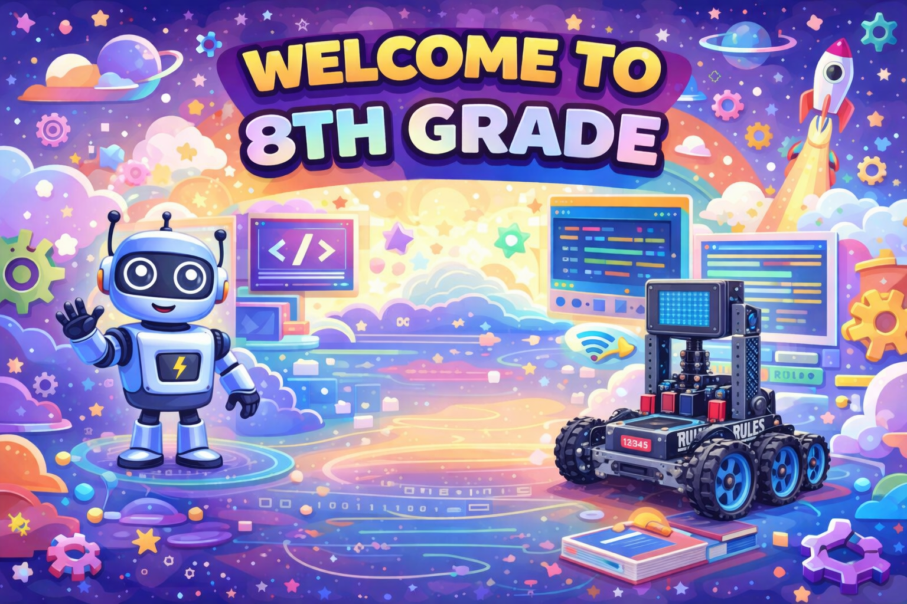

Overview
In 8th grade Technology Class, students will learn how to code in Java and JavaScript, while also exploring physical computing and basic robotics. Through hands-on activities and projects, students will build problem-solving, creativity, and technology skills that connect computer science to real-world applications.

What Students Will Learn
Students will learn Java and JavaScript using CodeHS. CodeHS is a widely used online computer science platform that provides web-based lessons, coding practice, projects, video tutorials, and teacher tools to support computer science instruction. It helps students build coding, computational thinking, and problem-solving skills through guided practice and interactive activities.
Students will also explore physical computing and basic robotics through the Project Lead The Way (PLTW) curriculum. PLTW is a nationally recognized STEM and career-technical education program that uses hands-on, project-based learning to help students develop teamwork, design thinking, and real-world technology skills. As part of this learning, students will complete projects using Arduinos to explore how code can control hardware and interact with the physical world.
Students may also have the opportunity to be introduced to tools such as the NeuroMaker Hand and Spheros through materials checked out from the PAST Foundation, a nonprofit organization that supports innovative hands-on learning experiences. These opportunities help students connect coding, engineering, and design to exciting real-world technology applications.